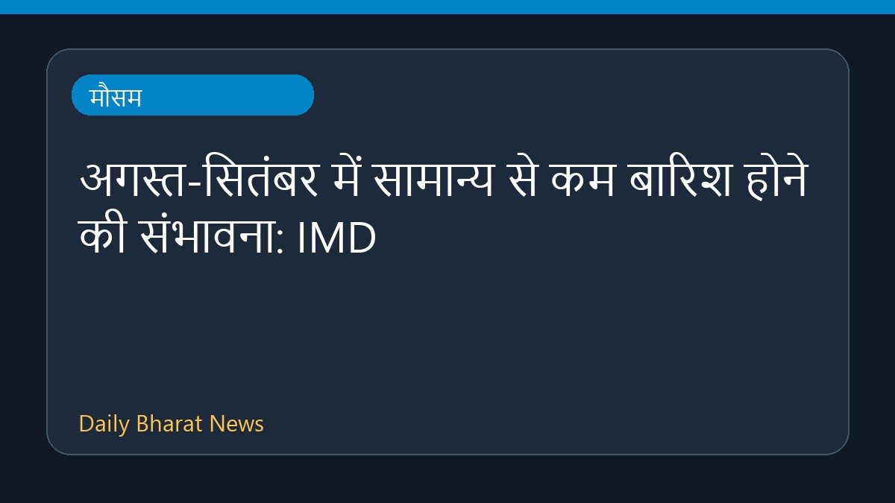

अगस्त-सितंबर में सामान्य से कम बारिश होने की संभावना: IMD

भारत मौसम विज्ञान विभाग (IMD) के अनुसार, आने वाले महीनों यानी अगस्त और सितंबर में देश में सामान्य से कम बारिश होने की संभावना है। मौसम एजेंसी द्वारा दी गई जानकारी के मुताबिक इस अवधि के दौरान मानसूनी वर्षा सामान्य स्तर से नीचे रहने का अनुमान जताया गया है। इस संबंध में विस्तृत आधिकारिक विवरण अभी सीमित हैं।
मूल स्रोत: Weather News Sources
August-September rain likely to be below normal, says IMD | India News - Hindustan Times ↗
August-September rain likely to be below normal, says IMD | India News - Hindustan Times ↗